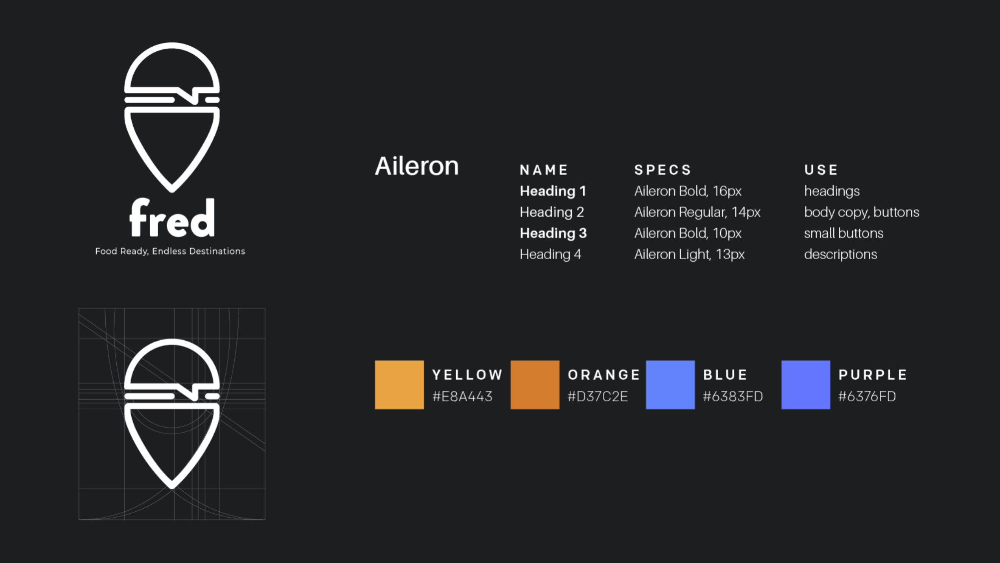
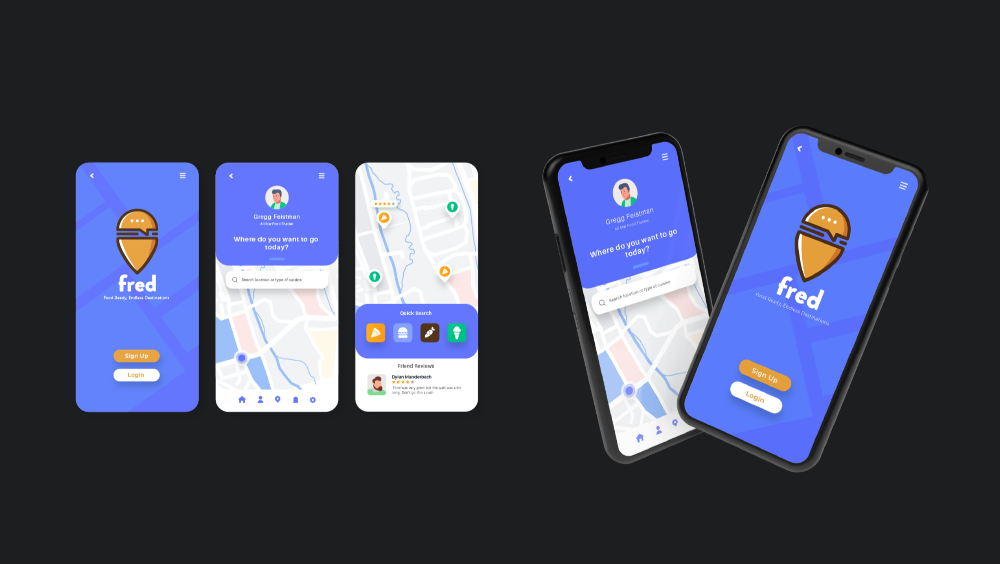

F.R.E.D. App
F.R.E.D. (Food Ready, Endless Destinations) is an app built with one simple idea behind it—allow cities to have a centralized database of all the food trucks in the area. Users could visit the app, create profiles and either find food their interested in or make a list of trucks they want to visit in the future.
I was tasked with consulting on a wide-range of operations, primarily research and UX design. I was to ensure the process of building their UX plan went smoothly and also offer guidance on marketing endeavors. My most visible contribution, however, was designing the logo and branding.
 